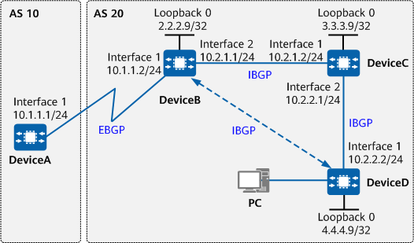

Example for Configuring BGP GTSM
Networking Requirements
Attacks that use bogus messages can consume and overload limited device resources (such as CPU resources). For example, an attacker may continuously send messages to a BGP device by simulating BGP messages. After receiving these messages, the BGP device determines that it is the destination, and consequently sends them directly to the control plane for BGP processing, without checking their validity. Because the BGP device assumes that these messages are valid, it processes them, consuming many CPU resources.
The GTSM can protect devices against CPU utilization attacks by checking whether the TTL value in the IP packet header is within a pre-defined range.
As shown in Figure 1, DeviceA belongs to AS 10, and DeviceB, DeviceC, and DeviceD belong to AS 20. BGP runs on the network, and BGP GTSM is used to protect DeviceB against CPU utilization attacks.

In this example, interface 1 and interface 2 represent 10GE0/0/1 and 10GE0/0/2, respectively.

During the configuration, note the following:
GTSM must be enabled on both ends of a BGP connection.
The same hops value must be configured for the peers on both ends of a BGP connection.
Precautions
During the configuration, note the following:
- To improve security, you are advised to deploy BGP security measures. For details, see "Configuring BGP Authentication." Keychain authentication is used as an example. For details, see Example for Configuring Keychain Authentication for BGP.
Procedure
- Assign an IP address to each involved interface. For detailed configurations, see Configuration Scripts.
- Configure OSPF. For configuration details, see Configuration Scripts.
- Configure IBGP full-mesh connections.
# Configure DeviceB.
[DeviceB] bgp 20 [DeviceB-bgp] router-id 2.2.2.9 [DeviceB-bgp] peer 3.3.3.9 as-number 20 [DeviceB-bgp] peer 3.3.3.9 connect-interface LoopBack0 [DeviceB-bgp] peer 3.3.3.9 next-hop-local [DeviceB-bgp] peer 4.4.4.9 as-number 20 [DeviceB-bgp] peer 4.4.4.9 connect-interface LoopBack0 [DeviceB-bgp] peer 4.4.4.9 next-hop-local [DeviceB-bgp] quit
# Configure DeviceC.
[DeviceC] bgp 20 [DeviceC-bgp] router-id 3.3.3.9 [DeviceC-bgp] peer 2.2.2.9 as-number 20 [DeviceC-bgp] peer 2.2.2.9 connect-interface LoopBack0 [DeviceC-bgp] peer 4.4.4.9 as-number 20 [DeviceC-bgp] peer 4.4.4.9 connect-interface LoopBack0 [DeviceC-bgp] quit
# Configure DeviceD.
[DeviceD] bgp 20 [DeviceD-bgp] router-id 4.4.4.9 [DeviceD-bgp] peer 2.2.2.9 as-number 20 [DeviceD-bgp] peer 2.2.2.9 connect-interface LoopBack0 [DeviceD-bgp] peer 3.3.3.9 as-number 20 [DeviceD-bgp] peer 3.3.3.9 connect-interface LoopBack0 [DeviceD-bgp] quit
- Configure an EBGP connection.
# Configure DeviceA.
[DeviceA] bgp 10 [DeviceA-bgp] router-id 1.1.1.9 [DeviceA-bgp] peer 10.1.1.2 as-number 20 [DeviceA-bgp] quit
# Configure DeviceB.
[DeviceB] bgp 20 [DeviceB-bgp] peer 10.1.1.1 as-number 10 [DeviceB-bgp] quit
# Display the connection status of peers.
[DeviceB] display bgp peer BGP local router ID : 2.2.2.9 Local AS number : 20 Total number of peers : 3 Peers in established state : 3 Peer V AS MsgRcvd MsgSent OutQ Up/Down State PrefRcv 3.3.3.9 4 20 8 7 0 00:05:06 Established 0 4.4.4.9 4 20 8 10 0 00:05:33 Established 0 10.1.1.1 4 10 7 7 0 00:04:09 Established 0
The preceding command output shows that BGP connections have been established between DeviceB and other devices.
- Configure GTSM on DeviceA and DeviceB. The two devices are directly connected; therefore, the valid TTL range of the messages between them is [255, 255]. In this case, the value of valid-ttl-hops is 1.
# Configure GTSM on DeviceA.
[DeviceA] bgp 10 [DeviceA-bgp] peer 10.1.1.2 valid-ttl-hops 1 [DeviceA-bgp] quit
# Configure GTSM for the EBGP connection on DeviceB.
[DeviceB] bgp 20 [DeviceB-bgp] peer 10.1.1.1 valid-ttl-hops 1 [DeviceB-bgp] quit
# Check the GTSM configuration.
[DeviceB] display bgp peer 10.1.1.1 verbose BGP Peer is 10.1.1.1, remote AS 10 Type: EBGP link BGP version 4, Remote router ID 1.1.1.9 Group ID : 2 BGP current state: Established, Up for 00h49m35s BGP current event: RecvKeepalive BGP last state: OpenConfirm BGP Peer Up count: 1 Received total routes: 0 Received active routes total: 0 Advertised total routes: 0 Port: Local - 179 Remote - 52876 Configured: Active Hold Time: 180 sec Keepalive Time:60 sec Received : Active Hold Time: 180 sec Negotiated: Active Hold Time: 180 sec Keepalive Time:60 sec Peer optional capabilities: Peer supports bgp multi-protocol extension Peer supports bgp route refresh capability Peer supports bgp 4-byte-as capability Address family IPv4 Unicast: advertised and received Received: Total 59 messages Update messages 0 Open messages 2 KeepAlive messages 57 Notification messages 0 Refresh messages 0 Sent: Total 79 messages Update messages 5 Open messages 2 KeepAlive messages 71 Notification messages 1 Refresh messages 0 Last keepalive received: 2009-02-20 13:54:58 Minimum route advertisement interval is 30 seconds Optional capabilities: Route refresh capability has been enabled 4-byte-as capability has been enabled GTSM has been enabled, valid-ttl-hops: 1 Peer Preferred Value: 0 Routing policy configured: No routing policy is configuredThe preceding command output shows that GTSM has been enabled, the number of valid hops is 1, and the status of the BGP connections is Established.
- Configure GTSM on DeviceB and DeviceC. The two devices are directly connected; therefore, the valid TTL range of the messages between them is [255, 255]. In this case, the value of valid-ttl-hops is 1.
# Configure GTSM on DeviceB.
[DeviceB] bgp 20 [DeviceB-bgp] peer 3.3.3.9 valid-ttl-hops 1 [DeviceB-bgp] quit
# Configure GTSM for the IBGP connection on DeviceC.
[DeviceC] bgp 20 [DeviceC-bgp] peer 2.2.2.9 valid-ttl-hops 1 [DeviceC-bgp] quit
# Check the GTSM configuration.
[DeviceB] display bgp peer 3.3.3.9 verbose BGP Peer is 3.3.3.9, remote AS 20 Type: IBGP link BGP version 4, Remote router ID 3.3.3.9 Group ID : 0 BGP current state: Established, Up for 00h54m36s BGP current event: KATimerExpired BGP last state: OpenConfirm BGP Peer Up count: 1 Received total routes: 0 Received active routes total: 0 Advertised total routes: 0 Port: Local - 54998 Remote - 179 Configured: Active Hold Time: 180 sec Keepalive Time:60 sec Received : Active Hold Time: 180 sec Negotiated: Active Hold Time: 180 sec Keepalive Time:60 sec Peer optional capabilities: Peer supports bgp multi-protocol extension Peer supports bgp route refresh capability Peer supports bgp 4-byte-as capability Address family IPv4 Unicast: advertised and received Received: Total 63 messages Update messages 0 Open messages 1 KeepAlive messages 62 Notification messages 0 Refresh messages 0 Sent: Total 69 messages Update messages 10 Open messages 1 KeepAlive messages 58 Notification messages 0 Refresh messages 0 Last keepalive received: 2009-02-20 13:57:43 Minimum route advertisement interval is 15 seconds Optional capabilities: Route refresh capability has been enabled 4-byte-as capability has been enabled Nexthop self has been configured Connect-interface has been configured GTSM has been enabled, valid-ttl-hops: 1 Peer Preferred Value: 0 Routing policy configured: No routing policy is configuredThe preceding command output shows that GTSM has been enabled, the number of valid hops is 1, and the status of the BGP connections is Established.
- Configure GTSM on DeviceC and DeviceD. The two devices are directly connected; therefore, the valid TTL range of the messages between them is [255, 255]. In this case, the value of valid-ttl-hops is 1.
# Configure GTSM for the IBGP connection on DeviceC.
[DeviceC] bgp 20 [DeviceC-bgp] peer 4.4.4.9 valid-ttl-hops 1 [DeviceC-bgp] quit
# Configure GTSM for the IBGP connection on DeviceD.
[DeviceD] bgp 20 [DeviceD-bgp] peer 3.3.3.9 valid-ttl-hops 1 [DeviceD-bgp] quit
# Check the GTSM configuration.
[DeviceC] display bgp peer 4.4.4.9 verbose BGP Peer is 4.4.4.9, remote AS 20 Type: IBGP link BGP version 4, Remote router ID 4.4.4.9 Group ID : 1 BGP current state: Established, Up for 00h56m06s BGP current event: KATimerExpired BGP last state: OpenConfirm BGP Peer Up count: 1 Received total routes: 0 Received active routes total: 0 Advertised total routes: 0 Port: Local - 179 Remote - 53758 Configured: Active Hold Time: 180 sec Keepalive Time:60 sec Received : Active Hold Time: 180 sec Negotiated: Active Hold Time: 180 sec Keepalive Time:60 sec Peer optional capabilities: Peer supports bgp multi-protocol extension Peer supports bgp route refresh capability Peer supports bgp 4-byte-as capability Address family IPv4 Unicast: advertised and received Received: Total 63 messages Update messages 0 Open messages 1 KeepAlive messages 62 Notification messages 0 Refresh messages 0 Sent: Total 63 messages Update messages 0 Open messages 2 KeepAlive messages 61 Notification messages 0 Refresh messages 0 Last keepalive received: 2009-02-20 14:00:06 Minimum route advertisement interval is 15 seconds Optional capabilities: Route refresh capability has been enabled 4-byte-as capability has been enabled Connect-interface has been configured GTSM has been enabled, valid-ttl-hops: 1 Peer Preferred Value: 0 Routing policy configured: No routing policy is configuredThe preceding command output shows that GTSM has been enabled, the number of valid hops is 1, and the status of the BGP connections is Established.
- Configure GTSM on DeviceB and DeviceD. DeviceB and DeviceD are connected through DeviceC; therefore, the valid TTL range of the messages between DeviceB and DeviceD is [254, 255]. In this case, the value of valid-ttl-hops is 2.
# Configure GTSM for the IBGP connection on DeviceB.
[DeviceB] bgp 20 [DeviceB-bgp] peer 4.4.4.9 valid-ttl-hops 2 [DeviceB-bgp] quit
# Configure GTSM on DeviceD.
[DeviceD] bgp 20 [DeviceD-bgp] peer 2.2.2.9 valid-ttl-hops 2 [DeviceD-bgp] quit
# Check the GTSM configuration.
[DeviceB] display bgp peer 4.4.4.9 verbose BGP Peer is 4.4.4.9, remote AS 20 Type: IBGP link BGP version 4, Remote router ID 4.4.4.9 Group ID : 0 BGP current state: Established, Up for 00h57m48s BGP current event: RecvKeepalive BGP last state: OpenConfirm BGP Peer Up count: 1 Received total routes: 0 Received active routes total: 0 Advertised total routes: 0 Port: Local - 53714 Remote - 179 Configured: Active Hold Time: 180 sec Keepalive Time:60 sec Received : Active Hold Time: 180 sec Negotiated: Active Hold Time: 180 sec Keepalive Time:60 sec Peer optional capabilities: Peer supports bgp multi-protocol extension Peer supports bgp route refresh capability Peer supports bgp 4-byte-as capability Address family IPv4 Unicast: advertised and received Received: Total 72 messages Update messages 0 Open messages 1 KeepAlive messages 71 Notification messages 0 Refresh messages 0 Sent: Total 82 messages Update messages 10 Open messages 1 KeepAlive messages 71 Notification messages 0 Refresh messages 0 Last keepalive received: 2009-02-20 14:01:27 Minimum route advertisement interval is 15 seconds Optional capabilities: Route refresh capability has been enabled 4-byte-as capability has been enabled Nexthop self has been configured Connect-interface has been configured GTSM has been enabled, valid-ttl-hops: 2 Peer Preferred Value: 0 Routing policy configured: No routing policy is configuredYou can view that GTSM is enabled, the number of valid TTL hops is 2, and that the BGP connection is in the Established state.
In this example, if the value of valid-ttl-hops on either DeviceB or DeviceD is less than 2, the IBGP connection cannot be established.
GTSM must be enabled on both ends of a BGP connection.
Verifying the Configuration
# Run the display gtsm statistics all command on DeviceB to check GTSM statistics. If the default action is pass for the messages that do not match the GTSM policy and all the messages are valid, no message is dropped.
[DeviceB] display gtsm statistics all GTSM Statistics Table ---------------------------------------------------------------- SlotId Protocol Total Counters Drop Counters Pass Counters ---------------------------------------------------------------- 0 BGP 17 0 17 0 BGPv6 0 0 0 0 OSPF 0 0 0 0 OSPFv3 0 0 0 0 RIP 0 0 0 1 BGP 0 0 0 1 BGPv6 0 0 0 1 OSPF 0 0 0 1 OSPFv3 0 0 0 1 RIP 0 0 0 ----------------------------------------------------------------
If the host PC simulates the BGP messages of DeviceA to attack DeviceB, the messages are dropped when they reach DeviceB. This is because the TTL value is not 255. As a result, in the GTSM statistics on DeviceB, the number of dropped messages also increases.
Configuration Scripts
DeviceA
# sysname DeviceA # interface 10GE0/0/1 ip address 10.1.1.1 255.255.255.0 # bgp 10 router-id 1.1.1.9 peer 10.1.1.2 as-number 20 peer 10.1.1.2 valid-ttl-hops 1 # ipv4-family unicast undo synchronization peer 10.1.1.2 enable # return
DeviceB
# sysname DeviceB # interface 10GE0/0/1 ip address 10.1.1.2 255.255.255.0 # interface 10GE0/0/2 ip address 10.2.1.1 255.255.255.0 # interface LoopBack0 ip address 2.2.2.9 255.255.255.255 # bgp 20 router-id 2.2.2.9 peer 3.3.3.9 as-number 20 peer 3.3.3.9 valid-ttl-hops 1 peer 3.3.3.9 connect-interface LoopBack0 peer 4.4.4.9 as-number 20 peer 4.4.4.9 valid-ttl-hops 2 peer 4.4.4.9 connect-interface LoopBack0 peer 10.1.1.1 as-number 10 peer 10.1.1.1 valid-ttl-hops 1 # ipv4-family unicast undo synchronization import-route ospf 1 peer 3.3.3.9 enable peer 3.3.3.9 next-hop-local peer 4.4.4.9 enable peer 4.4.4.9 next-hop-local peer 10.1.1.1 enable # ospf 1 area 0.0.0.0 network 10.2.1.0 0.0.0.255 network 2.2.2.9 0.0.0.0 # return
DeviceC
# sysname DeviceC # interface 10GE0/0/1 ip address 10.2.1.2 255.255.255.0 # interface 10GE0/0/2 ip address 10.2.2.1 255.255.255.0 # interface LoopBack0 ip address 3.3.3.9 255.255.255.255 # bgp 20 router-id 3.3.3.9 peer 2.2.2.9 as-number 20 peer 2.2.2.9 valid-ttl-hops 1 peer 2.2.2.9 connect-interface LoopBack0 peer 4.4.4.9 as-number 20 peer 4.4.4.9 valid-ttl-hops 1 peer 4.4.4.9 connect-interface LoopBack0 # ipv4-family unicast undo synchronization peer 2.2.2.9 enable peer 4.4.4.9 enable # ospf 1 area 0.0.0.0 network 10.2.1.0 0.0.0.255 network 10.2.2.0 0.0.0.255 network 3.3.3.9 0.0.0.0 # return
DeviceD
# sysname DeviceD # interface 10GE0/0/1 ip address 10.2.2.2 255.255.255.0 # interface LoopBack0 ip address 4.4.4.9 255.255.255.255 # bgp 20 router-id 4.4.4.9 peer 2.2.2.9 as-number 20 peer 2.2.2.9 valid-ttl-hops 2 peer 2.2.2.9 connect-interface LoopBack0 peer 3.3.3.9 as-number 20 peer 3.3.3.9 valid-ttl-hops 1 peer 3.3.3.9 connect-interface LoopBack0 # ipv4-family unicast undo synchronization peer 2.2.2.9 enable peer 3.3.3.9 enable # ospf 1 area 0.0.0.0 network 10.2.2.0 0.0.0.255 network 4.4.4.9 0.0.0.0 # return